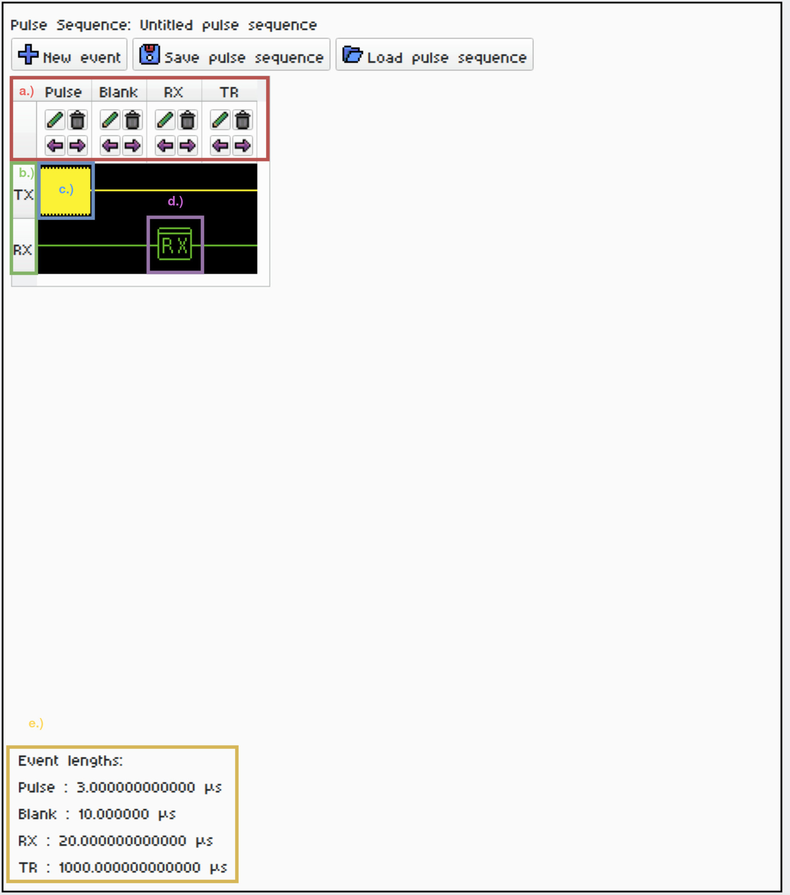

1. NQRduck Simulator Tutorial 🦆#
Introduction#
This Tutorial gives a short overview of how to use the NQRduck Simulator. The NQRduck Simulator is a module of the NQRduck program that allows you to simulate NQR signals and spectra.
Requirements#
All requirements from the NQRduck Setup Tutorial
Steps (Linux)#
Switch to the Spectrometer module in the NQRduck program.
|
|---|
Figure: The |

You can now see two different sections in the Spectrometer module:
The left side are the spectrometer
Settings. These are values that don’t change during aPulse Sequence.The right side is the
Pulse Programmer. Here you can create sequences of pulses that are executed during the simulation.
Create a simple Free Induction Decay (FID) sequence in the
Pulse Programmeron the right side:A sequence is made up of different
Eventsthat are executed subsequently. DifferentEventsare rows in thePulse Programmertable.For every
Eventyou can specify a certain duration and a name.Every
Eventnow hasPulse Parametersassociated with it. For the Simulator, these are the TX and the RX Pulse Parameters.
 |
|---|
Figure: An exemplary FID sequence. |
Description |
a.) The different events: |
b.) The Pulse Parameters for the selected event. |
c.) The Pulse Parameters for the Pulse Event. |
d.) The Pulse Parameters for the RX Event. |
e.) The duration of the different events. |
You can add new Events by clicking on the New Event button. Events can be moved by clicking the purple Arrows. You can delete an Event by clicking on the garbage can icon. The Event duration and name can be changed.
Advisable durations for the different events are:
Pulse: 3µs - Relative TX Amplitude: 1.0
Blank: 8µs
RX: 150µs
TR: 10ms (not strictly necessary for the simulation, be careful since this will also ‘use up’ your simulation points.)
You can now adjust the settings of the Simulator on the right side. Different settings are for example the number of simulation points or the noise level.
To start the simulation, switch back to the
Measurementtab. Enter aTarget Frequencyof 83.56MHz and 100Averages. Now press theStart Measurementbutton.You should see an exponential decay in the plot. This is the FID signal that you just simulated.
The signal might look weird if you didn’t set the correct Pulse Parameters. Try to adjust either the length of your TX event or the pulse power to achieve a $\frac{\pi}{2}$ flip angle. If your resolution looks low, try adjusting the number of simulation points in the
Settingstab.
Try setting the experiment temperature to 77K and see how the signal changes.
Save your pulse sequence by clicking on the
Save pulse sequencebutton in the Pulse Programmer.Next try to implement a Spin Echo (SE) sequence. Try to center your RX event around the echo of the signal. Play around with relaxation times and see how the signal changes.
If you found a pulse sequence that you like, you can save it by clicking on the
Save pulse sequencebutton in the Pulse Programmer.We will now run these sequences on the real hardware. See Tutorial 2 for more information.
Notes:#
With some of the last updates I broke the signal processing options. I will fix this in the next updates. For now, you can only simulate the signal and not process it.
The
Measurement Frequencydoesn’t have any effect on the simulation right now. It is only used for the real hardware.